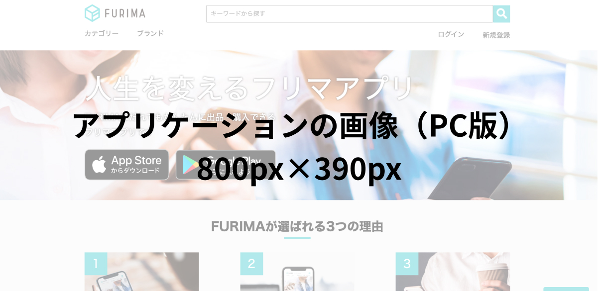
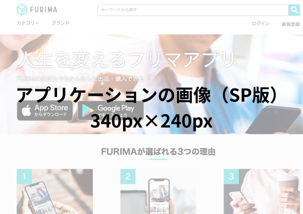

FURIMA（フリマアプリ）


開発環境
Ruby / Ruby on Rails / MySQL / GitHub / Render / Visual Studio Code / Trello
-
概要
制作時間 180時間 URL https://furima-38654.onrender.com ID admin PASS 2222 -
動作テスト
購入テスト用アカウント
mail coffeeplantation2@gmail.com PASS qwer1234 購入テスト用カード情報
番号 4242424242424242 期限 12/24 CVC 123
OUTLINEアプリケーションの概要
プログラミングスクールの最終課題制作としてフリーマーケットのアプリケーションを作成しました。
ユーザーを登録すると商品を出品できるようになります。自身が出品した商品は、編集と削除をすることができます。他のユーザーが出品した商品は、クレジットカードを用いて購入することができます。
クレジットカード購入機能については、PAY.JPが提供しているAPIを使用しています。
-
開発で苦労したこと

限られた時間の中で、効率的に作業を進められるように気をつけました。
期限内に完了するために、できるだけ正確に、記述にミスがないよう、特にスケジュールの管理に気をつけました。結果、致命的なエラーによるやり直しは起こらず、期限前まで学習と開発を進めることができました。テストコードは、最初慣れるまで大変でしたが、カリキュラムや、同様のケースをインターネットで探したりすることで、確からしいテストコードを記述することができ、効率よく進めることができました。
また、MVCの理解と、実際のコードやファイルがどのように対応しているか、ruby on railsの基本の理解に最初は苦労しましたが、カリキュラムの学習や、フリーマーケットアプリを開発する中でしっかりと身につき、それが次のアプリ開発のモチベーションにつながりました。今後は、Phpや、Pythonを学び、学習を継続していくことで、新しいアプリの開発をしていきたいと思っています。
-
今後実装したいと思っていること
クラウドファンディングのアプリケーションを開発中です。
現在、クラウドファンディング機能、マイページ機能、メッセージ投稿機能を持つアプリケーションを開発しています。寄付機能のあるアプリケーションにログイン機能をつけてマイページを作り、今後メッセージ投稿機能を作る予定です。